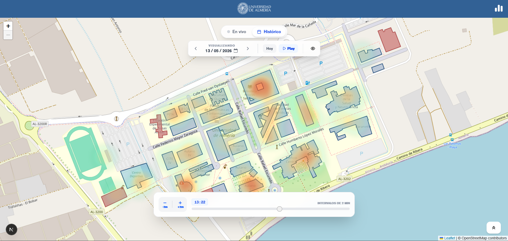

Experiencia laboral
Experiencia laboral
Esta página recoge mi experiencia laboral como una cronología, siguiendo la misma división que mi currículum. De momento incluye un único puesto: desarrollador full-stack en el Applied Computing Group (ACG) de la Universidad de Almería. El detalle técnico de cada puesto se amplía en su propia página.
Cronología
Mis puestos ordenados en el tiempo. Usa el buscador para filtrar por empresa, rol o tecnología, y el desplegable para cambiar el orden.
-

Febrero 2026 – Agosto 2026
Desarrollador full-stack
Applied Computing Group (ACG) · Universidad de Almería
Construcción en equipo, backend y frontend, de un mapa interactivo que muestra los dispositivos conectados a la red wifi del campus de la Universidad de Almería, con datos actualizados cada 2 minutos mediante ingesta automatizada.
- Desarrollo de una API en el backend en Node.js con Express.js.
- Frontend en Next.js: mapa interactivo con visualización de los dispositivos conectados a la red wifi sobre el plano del campus.
- Pipeline de telemetría geoespacial del campus: ingesta de ~3.000 filas cada 2 minutos automatizada con n8n, con almacenamiento y consulta espacial en PostGIS.
- Despliegue en Docker.
No hay experiencias que coincidan con la búsqueda.